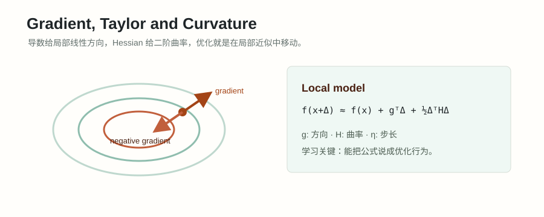

#002. 微积分一：极限、连续与导数

#学习目标：把变化率讲清楚
本章只围绕一个核心问题：函数输入变一点，输出会怎么变。微积分里很多术语都可以从这个问题出发理解：极限回答“靠近某点时输出趋向哪里”，连续回答“靠近得到的值和点上真正的值是否一致”，导数回答“输入发生一个很小变化时，输出最先按什么比例变化”，梯度回答“多维输入往哪个方向动，输出涨得最快”。
\(x\) 是输入，\(f(x)\) 是输出，\(a\) 是我们关心的当前位置，\(h\) 是一个很小的输入改变量，\(\Delta f=f(a+h)-f(a)\) 是输出改变量。
能用定义算一元导数，能对二元函数分别求偏导，能把梯度代入当前位置，判断局部上升和下降方向。
能解释梯度下降不是“玄学调参”，而是用当前位置的局部线性近似，沿负梯度走一小步，让 loss 先下降。
- 看到 \(\lim_{x\to a} f(x)\)，知道它问的是 \(x\) 靠近 \(a\) 时 \(f(x)\) 的趋势，不是一定问 \(f(a)\) 本身。
- 看到 \(\frac{f(a+h)-f(a)}{h}\)，知道它是平均变化率；当 \(h\to 0\) 时，才变成瞬时变化率。
- 看到 \(\nabla f(x)\)，知道它是所有坐标方向偏导组成的向量，也是局部最陡上升方向。
#概念起点：输入变一点，输出怎么变
先不要把函数想成公式。函数就是一个输入到输出的规则：给模型参数 \(\theta\)，输出 loss \(L(\theta)\)；给一个交易仓位 \(w\)，输出组合风险 \(R(w)\)；给一个价格 \(S\)，输出期权价值 \(V(S)\)。面试里问导数、梯度和优化，本质上是在问：如果我稍微改一下输入，输出会变好还是变坏，变化有多快。
有限变化：输入从 \(a\) 变到 \(a+h\)，输出从 \(f(a)\) 变到 \(f(a+h)\)。输出变化量是 \(\Delta f=f(a+h)-f(a)\)。
平均变化率：\(\frac{f(a+h)-f(a)}{h}\)。读作“输出变化量除以输入变化量”。如果它等于 3，意思是这段区间里输入每增加 1，输出平均增加 3。
瞬时变化率：让 \(h\) 越来越小，观察平均变化率趋向哪个数。这个极限如果存在，就是导数。
因为复杂函数在大范围内可能弯来弯去，但在一个足够小的邻域里，经常可以近似成一条直线。优化算法通常不知道全局最优在哪里，只能在当前位置问：“往哪边走，眼前这一小步最可能让 loss 降低？”
#极限与连续：先看靠近时的行为
极限描述的是输入靠近某点时，函数值会趋向哪里。符号
读作：“当 \(x\) 越来越靠近 \(a\) 时，\(f(x)\) 越来越靠近 \(L\)。”这里的重点是靠近过程，不是只把 \(x=a\) 代进去。某些函数在 \(a\) 点没有定义，仍然可以有极限；某些函数在 \(a\) 点有定义，但靠近时的趋势不等于点上的取值。
连续是在极限基础上再加一个要求：靠近得到的值，必须等于函数在该点真正的值。
| 问题 | 看什么 | 直觉 |
|---|---|---|
| 极限是否存在 | 左边靠近和右边靠近是否趋向同一个数 | 两侧走向要会合 |
| 函数是否连续 | 极限值是否等于点上的函数值 | 曲线不能跳断，也不能在点上挖洞后填错值 |
| 函数是否可导 | 左右瞬时斜率是否一致且有限 | 不仅不能跳断，还要在局部有唯一切线 |
小例子：有极限但不连续。 定义
问：\(\lim_{x\to 1} f(x)\) 是多少？\(f\) 在 \(1\) 点连续吗？
当 \(x\) 靠近 1 但不等于 1 时，函数按 \(x+1\) 计算，所以 \(f(x)\) 靠近 \(2\)。因此
但是点上的取值被单独定义成 \(f(1)=10\)。极限值 \(2\) 不等于点值 \(10\)，所以它在 \(1\) 点不连续。这个例子说明：极限看的是“周围逼近”，连续才要求“周围逼近”和“点上取值”一致。
连续不等于可导。经典例子是 \(f(x)=|x|\)：它在 0 点没有跳断，所以连续；但左侧斜率是 \(-1\)，右侧斜率是 \(1\)，在尖点处没有唯一切线，所以不可导。
#导数：一元函数的局部线性模型
导数的定义来自平均变化率。把输入从 \(a\) 改成 \(a+h\)，输出变化是 \(f(a+h)-f(a)\)，平均变化率是
当 \(h\) 趋近于 0，如果这个比值趋近一个稳定的数，就把它叫作 \(f\) 在 \(a\) 点的导数：
这个公式可以这样读：用一个很小的输入变化 \(h\)，观察输出变化除以 \(h\) 后接近哪个数。导数 \(f'(a)\) 不是整条曲线的平均斜率，而是 \(a\) 点附近最局部的斜率。
如果 \(f'(a)=m\)，那么在 \(a\) 附近，函数最先表现得像一条斜率为 \(m\) 的直线：\(f(a+h)\approx f(a)+mh\)。这不是说函数真的变成直线，而是说当 \(h\) 足够小时，线性项通常是最主要的变化。
在机器学习里，把 \(f\) 换成 loss \(L\)，把 \(a\) 换成当前参数，就得到最基本的优化直觉：我们不需要马上知道完整 loss 曲面，只要知道当前位置附近向左还是向右能让 loss 变小。
#一元手算例题：从割线到切线
例题 1：用定义求 \(f(x)=x^2\) 在 \(a=3\) 的导数。
从定义开始：
分别计算两项：
代回差商：
让 \(h\to 0\)，得到
所以在 \(x=3\) 附近，\(x^2\) 的局部线性近似是
例如 \(h=0.01\) 时，真实值是 \(3.01^2=9.0601\)，线性近似是 \(9.06\)，误差只有 \(0.0001\)。这就是“小步移动时，导数给出主要变化”的具体含义。
例题 2：判断 \(f(x)=|x|\) 在 \(0\) 点是否可导。
右侧靠近时，取 \(h>0\)：
左侧靠近时，取 \(h<0\)，此时 \(|h|=-h\)：
左右差商趋向不同数，所以极限不存在，\(f(x)=|x|\) 在 \(0\) 点不可导。注意它仍然连续，因为 \(\lim_{x\to 0}|x|=0=f(0)\)。
#偏导、方向导数与梯度
一元函数只有一个输入方向：向左或向右。多元函数有很多输入方向。比如 \(f(x,y)\) 的输入是平面上的一个点，既可以只改 \(x\)，也可以只改 \(y\)，还可以沿任意斜方向同时改 \(x\) 和 \(y\)。
偏导数：\(\frac{\partial f}{\partial x}\) 表示只让 \(x\) 变化，把其他变量暂时当常数。类似地，\(\frac{\partial f}{\partial y}\) 表示只让 \(y\) 变化。
梯度：\(\nabla f(x,y)=\left(\frac{\partial f}{\partial x},\frac{\partial f}{\partial y}\right)^T\)。它把每个坐标方向的局部变化率放进一个向量。
方向导数：如果沿单位方向 \(u\) 走一小步，输出最开始的变化率是 \(D_u f=\nabla f^T u\)。这里 \(u\) 必须是单位向量，才表示“每走 1 单位距离”的变化率。
为什么梯度是最陡上升方向？因为当 \(\|u\|=1\) 时，内积满足
其中 \(\theta\) 是梯度向量和方向 \(u\) 的夹角。当 \(u\) 和梯度同向时，\(\cos\theta=1\)，方向导数最大；当 \(u\) 和梯度反向时，\(\cos\theta=-1\)，方向导数最小。因此梯度是局部最陡上升方向，负梯度是局部最陡下降方向。
#二元手算例题：看懂梯度方向
例题 3：设 \(f(x,y)=x^2+3xy+y^2\)，求点 \((1,2)\) 的梯度，并判断沿 \(u=\left(\frac{3}{5},\frac{4}{5}\right)\) 方向函数一开始是上升还是下降。
先求偏导。对 \(x\) 求偏导时，把 \(y\) 当常数：
对 \(y\) 求偏导时，把 \(x\) 当常数：
所以梯度为
代入 \((1,2)\)：
方向导数是梯度和单位方向的内积：
\(\frac{52}{5}>0\)，所以沿这个方向走一小步，函数值一开始会上升。若沿 \(-u\) 走，方向导数就是 \(-\frac{52}{5}\)，一开始会下降。
例题 4：同一个函数在点 \((1,2)\) 处，局部最陡下降方向是什么？
上一题已经得到 \(\nabla f(1,2)=(8,7)^T\)。最陡上升方向是梯度方向，最陡下降方向是负梯度方向：
如果只问“方向”而不是“步长”，通常写成单位方向：
这表示从当前位置出发，若每次只走同样短的距离，沿这个方向能让函数值下降得最快。
#为什么负梯度下降成立
梯度下降的更新写作
其中 \(x_t\) 是当前参数，\(\eta>0\) 是学习率。学习率读作“一次沿负梯度走多远”。用一阶局部线性近似看这个更新：
令 \(\Delta=-\eta\nabla f(x_t)\)，得到
因为 \(\eta>0\)，且 \(\|\nabla f(x_t)\|^2\ge 0\)，只要梯度不是零向量，这个一阶近似就比原来的 \(f(x_t)\) 小。这就是负梯度下降的基本理由：它把当前位置的梯度当成局部线性打分器，选择让这个线性打分下降最多的方向。
一阶近似只在当前位置附近可靠。如果 \(\eta\) 太大，更新会跳出“近似有效”的小邻域，函数曲率和高阶项开始主导，loss 可能反而上升。训练大模型时学习率过大导致 loss spike 或发散，本质上就是步子超过了局部近似能信任的范围。
例题 5：对 \(f(x)=(x-2)^2\)，从 \(x_0=5\) 做一步梯度下降。
先求导：
在 \(x_0=5\) 处，梯度是 \(f'(5)=6\)，说明向右会让函数上升，向左会让函数下降。若学习率 \(\eta=0.1\)，更新为
比较更新前后的函数值：
loss 确实下降了。如果学习率极大，例如 \(\eta=1\)，则 \(x_1=5-6=-1\)，\(f(-1)=9\)，这一步没有带来下降；更大的学习率还会发散。这说明负梯度给方向，学习率决定这一步是否仍然可信。
#面试连接、误区与检查清单
在 LLM 面试里，导数和梯度最常出现在线性层、softmax、cross-entropy、反向传播和优化器里。你不需要一开始背复杂公式，但必须能说清楚：loss 是参数的函数，梯度告诉我们每个参数微小变化会怎样影响 loss，优化器根据梯度决定参数更新方向。学习率不是随便乘的常数，而是“相信局部近似到多远”的尺度。
在量化面试里，同一套语言会出现在敏感度和风险控制里。期权的 Delta 可以理解为价格对标的价格的一阶敏感度；组合风险对权重的梯度说明增加某个仓位会怎样改变风险；因子暴露的微小变化会影响收益预测和约束优化结果。量化里的“敏感度”本质上就是某种导数或偏导。
| 场景 | 函数输入 | 函数输出 | 导数/梯度在回答什么 |
|---|---|---|---|
| LLM loss 优化 | 模型参数 \(\theta\) | 训练损失 \(L(\theta)\) | 每个参数变一点，loss 会怎么变 |
| 学习率调节 | 更新步长 \(\eta\) | 下一步 loss | 步子是否仍在局部近似可靠范围内 |
| 期权 Delta | 标的价格 \(S\) | 期权价值 \(V(S)\) | 价格小幅变化时，期权价值一阶变化多少 |
| 组合风险 | 仓位权重 \(w\) | 风险 \(R(w)\) | 增加某个方向的仓位会让风险上升还是下降 |
面试型小题：为什么训练时不是直接沿梯度方向更新，而是沿负梯度？
如果目标是最小化 loss，梯度方向是局部最陡上升方向，沿它走会让 loss 一开始增加。负梯度方向使一阶变化
为负，因此在学习率足够小时，loss 会下降。高质量回答还要补一句：如果 learning rate 太大，一阶近似失效，负梯度方向也不能保证实际 loss 每一步都下降。
不要把“连续”说成“可导”；不要把偏导理解成所有变量一起变；不要忘记方向导数里的方向 \(u\) 应该是单位向量；不要说梯度下降永远下降，它依赖足够小的步长和局部近似；不要把梯度大小直接等同于全局重要性，梯度是当前位置的局部信息。
- 我能解释 \(\lim_{x\to a}f(x)\) 和 \(f(a)\) 的区别。
- 我能用导数定义手算 \(x^2\) 在某点的导数，并说出差商每一项是什么意思。
- 我能说明为什么 \(|x|\) 在 0 点连续但不可导。
- 我能对简单二元函数求 \(\frac{\partial f}{\partial x}\)、\(\frac{\partial f}{\partial y}\)，并组成梯度。
- 我能用 \(D_u f=\nabla f^Tu\) 判断沿某个方向函数上升还是下降。
- 我能推导 \(f(x-\eta\nabla f(x))\approx f(x)-\eta\|\nabla f(x)\|^2\)，并解释学习率为什么不能太大。
- 我能把导数/梯度连接到 LLM 的 loss 优化、学习率，以及量化里的价格敏感度和风险敏感度。